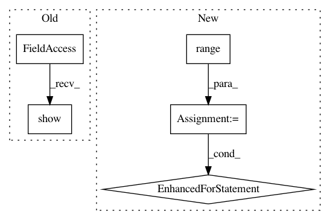

f4a624c725e8a20a5d295e2f1f1fbbcfb3724249,demo_duet_v2.py,,,#,11
Before Change
plt.subplot(1,2,1)
plt.title("Mixture");
S,P,F,T = f_stft(x[0,:],L,win,ovp,nfft,fs,mkplot,fmax);
plt.show()
// compute and plot the 2D histogram of mixing parameters
a_min=-3; a_max=3; a_num=100;
d_min=-3; d_max=3; d_num=100;
After Change
// play the separated sources
for i in range(0,N):
play(xhat[i,:],fs)
In pattern: SUPERPATTERN
Frequency: 3
Non-data size: 5
Instances
Project Name: interactiveaudiolab/nussl
Commit Name: f4a624c725e8a20a5d295e2f1f1fbbcfb3724249
Time: 2015-08-30
Author: fpishdadian@u.northwestern.edu
File Name: demo_duet_v2.py
Class Name:
Method Name:
Project Name: BindsNET/bindsnet
Commit Name: eec37e1ef3381df6462316c0a510c2e03c1a4bd5
Time: 2018-03-12
Author: hananel@hazan.org.il
File Name: examples/benchmark_similar_to_brain2.py
Class Name:
Method Name:
Project Name: tensorlayer/tensorlayer
Commit Name: 16a31e2c9fedc654e9117b42b8144adf1d0e4900
Time: 2020-02-03
Author: 34995488+Tokarev-TT-33@users.noreply.github.com
File Name: examples/reinforcement_learning/tutorial_A3C.py
Class Name:
Method Name: